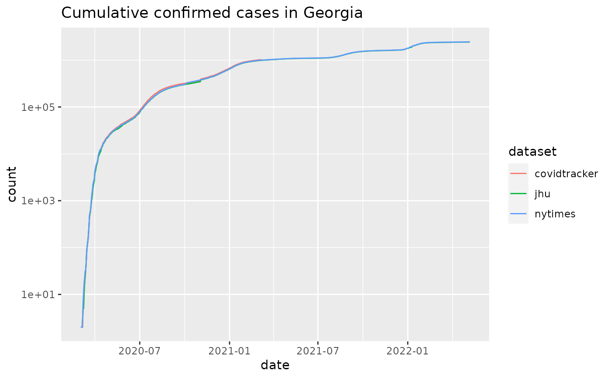
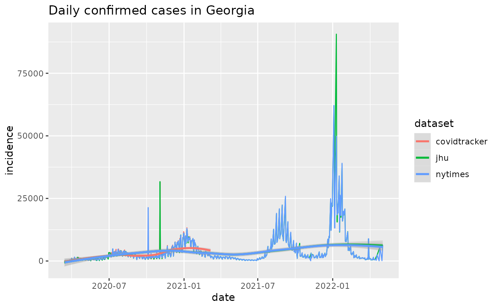

R/combined_us_cases_data.R
combined_us_cases_data.RdThis is a convenience function to combine results from sources providing US state-level datasets. A primary use case is to provide fodder for comparison and quality control over all the available datasets.
combined_us_cases_data()a data.frame
Other case-tracking:
align_to_baseline(),
beoutbreakprepared_data(),
bulk_estimate_Rt(),
coronadatascraper_data(),
covidtracker_data(),
ecdc_data(),
estimate_Rt(),
jhu_data(),
nytimes_county_data(),
owid_data(),
plot_epicurve(),
test_and_trace_data(),
usa_facts_data(),
who_cases()
cus = combined_us_cases_data()
#> Warning: One or more parsing issues, see `problems()` for details
#> Warning: One or more parsing issues, see `problems()` for details
head(cus)
#> # A tibble: 6 × 6
#> # Groups: fips [1]
#> dataset date fips count incidence state
#> <chr> <date> <chr> <dbl> <dbl> <chr>
#> 1 jhu 2020-01-22 00001 0 NA AL
#> 2 jhu 2020-01-23 00001 0 0 AL
#> 3 jhu 2020-01-24 00001 0 0 AL
#> 4 jhu 2020-01-25 00001 0 0 AL
#> 5 jhu 2020-01-26 00001 0 0 AL
#> 6 jhu 2020-01-27 00001 0 0 AL
unique(cus$dataset)
#> [1] "jhu" "covidtracker" "nytimes"
library(ggplot2)
plot_epicurve(cus, filter_expression = state == 'GA',color='dataset') +
ggtitle('Cumulative confirmed cases in Georgia')

plot_epicurve(cus, filter_expression = state == 'GA' & incidence>10,
case_column='incidence', color='dataset', log=FALSE) +
ggtitle('Daily confirmed cases in Georgia') + geom_smooth(alpha=0.25)
#> `geom_smooth()` using method = 'loess' and formula 'y ~ x'
